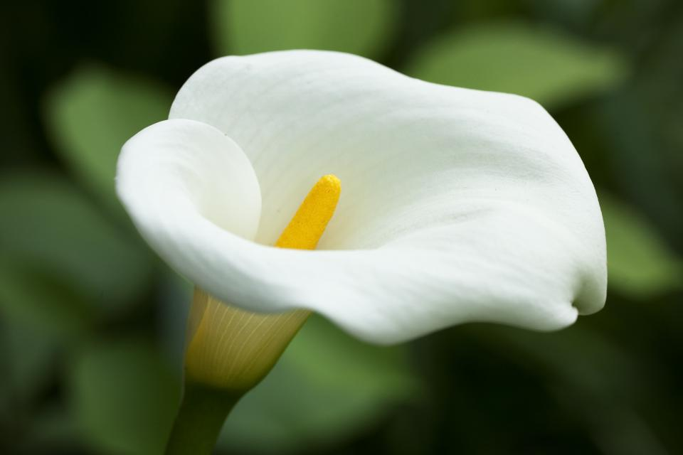

While arranging flowers, one must recognize that each flower, and sometimes even different colors of the same flower, has a specific meaning. Those who have recently started their flower arranging experience don't quite understand what the different flowers mean. Here is a list of common flowers and their meanings.
| Meanings of Common Flowers | |
|---|---|
Daisy- Daisies represent innocense, purity, and new beginnings. |
|
Rose- Roses represent love, faith, passion, devotion, and sensuality. |
|
Lily- Lilies represent royalty, motherhood, purity, and passion. |
 |
Orchid- Orchids represent love, beauty, refinement, and thoughtfulness. |
|
Lotus- Lotus flowers represent beauty, grace, and mysticism. |
|